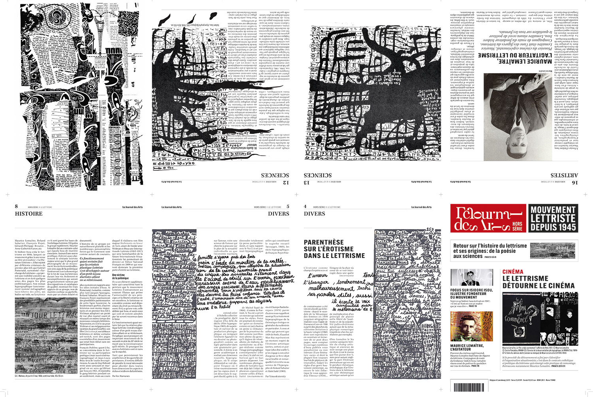
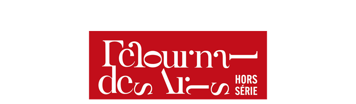
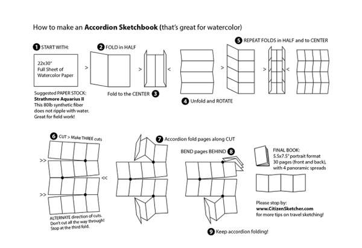

Le Journal des Arts
Hors série sur le Lettrisme
Le Journal des arts est un journal bimensuel consacré à l'art et à son marché en France et dans le monde. Sa direction artistique sobre permet de concevoir un hors-série de la revue décalé et innovant.
J’ai choisi d’imaginer un hors-série consacré au mouvement du lettrisme.
revisité à la manière des lettristes à l’occasion du hors-série
Le lettrisme est un mouvement fondé en 1945 par Isidore Isou (1925-2007). Ce mouvement éclectique s’intéressa autant à la littérature, qu’à la peinture, à la sculpture, au cinéma et aux sciences.
Il finit par disparaître progressivement, condamné par son fonctionnement quasi-sectaire, son petit noyau d’artistes et son éloignement du marché de l’art. Les œuvres étant rares, ce mouvement a obtenu peu de reconnaissance.

à côté de son hors-série consacré au lettrisme
Pour traduire graphiquement ce mouvement dans la composition du magazine, je me suis penchée particulièrement sur la poésie lettriste.
Les poèmes lettristes vont solliciter la vue et l’ouïe ; la lettre, le son, sont considérés comme supérieurs au mot, au sens.
Deux étapes sont mis en avant dans le lettrisme : l’hypergraphie, où la lettre devient un objet de création, puis la polythanasie, où la destruction d’une forme d’art antérieure va participer au renouveau créatif.
Pour mon hors-série, le magazine sera la matière première d’un artiste lettriste.
Le lecteur va pouvoir déconstruire le magazine pour créer une nouvelle œuvre.
Le lecteur sera incité à cette destruction par des contenus cachés et sur certaines pages, les oeuvres lettristes vont se propager au détriment du contenu textuel.
une fois la reliure retirée et le magazine déplié.
une fois la reliure retirée et le magazine déplié.
Cette idée est possible grâce au principe du pli accordéon, et à de la découpe.

Certaines pages ne peuvent être consultées sans altérer l’état initial du magazine, et la présence de lignes de pré-découpage vont aider le lecteur à passer à l’acte.
Après son intervention, le magazine va pouvoir devenir une œuvre d’art lettriste, car en retirant la simple reliure, il se transformera en un immense poster, plus ou moins déconstruit, selon les choix du lecteur/artiste.